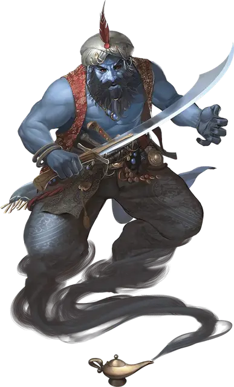

Джинн
Djinni
Большой Элементаль, законно-добрый

Класс Доспеха 17 (природный доспех)
Хиты 161 (14к10 + 84)
Скорость 30 футов, летая 90 футов
| мод | спас | ||
|---|---|---|---|
| СИЛ | 21 | +5 | +5 |
| ЛОВ | 15 | +2 | +6 |
| ТЕЛ | 22 | +6 | +6 |
| мод | спас | ||
|---|---|---|---|
| ИНТ | 15 | +2 | +2 |
| МДР | 16 | +3 | +7 |
| ХАР | 20 | +5 | +9 |
Иммунитет к урону звук, электричество
Чувства тёмное зрение 120 футов, пассивное Восприятие 13
Языки Ауран
Опасность 11 (7200 опыта)
Бонус мастерства +4
Среда обитания Побережье
Особенности
Элементальная гибель. Если джинн умирает, его тело распадается на тёплый ветерок, оставляя только снаряжение, которое джинн носил и нёс.
Врождённое колдовство. Базовой характеристикой джинна является Харизма (Сл спасброска от заклинания 17, +9 к попаданию атаками заклинаниями). Он может накладывать следующие заклинания, не нуждаясь в материальных компонентах:
• Неограниченно: волна грома [thunderwave], обнаружение зла и добра [detect evil and good], обнаружение магии [detect magic]
• 3/день каждое: сотворение пищи и воды [create food and water] (может создавать вино вместо воды), хождение по ветру [wind walk], языки [tongues]
• 1/день каждое: газообразная форма [gaseous form], невидимость [invisibility], образ [major image], призыв элементаля [conjure elemental] (только воздушный элементаль), сотворение [creation], уход в иной мир [plane shift]
Вариант: Способности гениев. Гении обладают различными магическими способностями, включая заклинания. Некоторые владеют столь великой силой, что могут менять обличья или изменять природу реальности.
Маскировка. Некоторые гении могут скрыть свою истинную природу, наложив на себя иллюзию сходного по сложению другого существа. Такие гении могут неограниченно накладывать заклинание маскировка [disguise self], зачастую с увеличенной длительностью. Более могущественные гении могут накладывать заклинание истинное превращение [true polymorph] от одного до трёх раз в день, возможно, с увеличенной длительностью. Такие гении могут менять только собственный облик, и крайне редко могут накладывать подобные заклинания на других существ или предметы.
Желания. Среди смертных ходят легенды о гениях, исполняющих желания. Но лишь могущественнейшие из гениев, например, их знатные представители, могут это сделать. Те из них, кто обладают такой силой, могут даровать исполнение от одного до трёх желаний любому существу, кроме другого гения. Если гений уже исполнил свой предел желаний, он не сможет сделать это вновь в течение некоторого времени (обычно 1 год), и, согласно законам вселенной, один и тот же гений может потратить свой лимит желаний на другое существо только один раз в жизни этого существа.
Чтобы гений исполнил желание, существо должно сформулировать его, находясь в 60 футах от гения. После этого гений накладывает заклинание исполнение желаний [wish], воспроизводящее эффект. Изворотливые по своей природе гении могут попытаться извратить желание, воспользовавшись несовершенством его формулировки. Как правило, искажение формулировок гении оборачивают себе на пользу.
Действия
Мультиатака. Джинн совершает три атаки скимитаром.
Скимитар. Рукопашная атака оружием: +9 к попаданию, досягаемость 5 футов, одна цель. Попадание: Рубящий урон 12 (2к6 + 5) плюс урон звуком или электричеством 3 (1к6) (на выбор джинна).
Создание смерча. В точке, которую джинн видит в пределах 120 футов от себя, магическим образом появляется смерч в виде цилиндра с радиусом 5 футов и высотой 30 футов. Смерч существует, пока джинн поддерживает концентрацию (как при концентрации на заклинании). Все существа кроме джинна, входящие в смерч, должны преуспеть в спасброске Силы Сл 18, иначе станут опутанными им. Джинн может действием перемещать смерч на расстояние до 60 футов, и существа, опутанные смерчем, перемещаются вместе с ним. Смерч исчезает, если джинн перестаёт его видеть.
Существо может действием освободить существо, опутанное смерчем, в том числе и себя, преуспев в проверке Силы Сл 18. Если проверка успешна, существо перестаёт быть опутанным и перемещается в ближайшее пространство за пределами смерча.
Описание
Гордые, эмоциональные гении со Стихийного Плана Воздуха. Джинны — это привлекательные, хорошо сложённые, высокие гуманоиды с синей кожей и тёмными глазами. Они одеваются в невесомые мерцающие шелка, которые не только удобны, но и хорошо подчёркивают их мускулатуру.
Ветреные эстеты. Джинны правят облачными островами, покрытыми бесчисленными шатрами или увенчанными чудесными зданиями, фонтанами и садами. Джинны любят комфорт и удобство, наслаждаются сочными фруктами, острыми винами, ароматными благовониями и прекрасной музыкой.
Джинны известны своим озорством и благосклонным отношением к смертным. В среде гениев джинны прохладно относятся к ифритам и маридам, которых считают высокомерными. Они открыто презирают дао и при малейшей провокации с их стороны отвечают им той же монетой.
Властители ветров. Будучи повелителями воздуха, джинны ездят на мощных вихрях, которые сами же и создают развлечения ради. Они способны управлять ими, и даже перевозить на них пассажиров. Существа, противостоящие джинну, атакуются ветром и громом, и на этом же ветру джинн покинет поле боя, если враг окажется сильнее. Во время полёта нижняя часть тела джинна становится столбом вращающегося воздуха.
Покорные слуги. Джинны верят, что подневольная служба — это проявление судьбы, и что никто не может противиться ей. Поэтому они единственные из всех гениев наиболее подходят для подобной службы, хотя она никогда не доставляет им радости. Своих рабов джинны воспринимают больше как слуг, заслуживающих доброты и защиты, и неохотно с ними расстаются.
Смертный, желающий получить услугу от джинна, может упросить его, преподнеся хорошие дары, или прибегнув к лести. Однако могущественные волшебники способны просто призвать джинна и заставить его служить, или могут поймать его, используя магию. Долговременная служба раздражает джинна, а заточение — непростительно. Джиннов возмущают жестокие волшебники, заставляющие их столетиями томиться в бутылках, железных флягах и духовых инструментах. Предательство, особенно со стороны смертного, которому джинн доверял — крайне мерзкое деяние, которое можно искупить только смертью.
См. дополнительно статью: "Бестиарий: Гении"